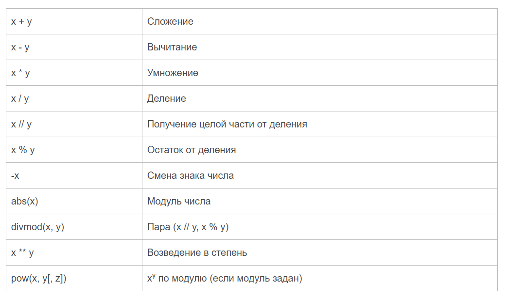

Python поддерживает все распространенные арифметические операции:
+
Сложение двух чисел:
print(6 + 2) # 8
-
Вычитание двух чисел:
print(6 - 2) # 4
*
Умножение двух чисел:
print(6 * 2) # 12
/
Деление двух чисел:
print(6 / 2) # 3.0
//
Целочисленное деление двух чисел:
print(7 / 2) # 3.5
print(7 // 2) # 3
Данная операция возвращает целочисленный результат деления, отбрасывая дробную часть
**
Возведение в степень:
print(6 ** 2) # Возводим число 6 в степень 2. Результат - 36
%
Получение остатка от деления:
print(7 % 2) # Получение остатка от деления числа 7 на 2. Результат - 1
В данном случае ближайшее число к 7, которое делится на 2 без остатка, это 6. Поэтому остаток от деления равен 7 - 6 = 1
Арифметические операции с присвоением
Ряд специальных операций позволяют использовать присвоить результат операции первому операнду:
+=
Присвоение результата сложения
-=
Присвоение результата вычитания
*=
Присвоение результата умножения
/=
Присвоение результата от деления
//=
Присвоение результата целочисленного деления
**=
Присвоение степени числа
%=
Присвоение остатка от деления
Примеры операций:
number = 10
number += 5
print(number) # 15
number -= 3
print(number) # 12
number *= 4
print(number) # 48
Задание:
Произведите каждую из перечисленных операций для двух переменных типа int.
Библиотека Math.
В стандартную поставку Python входит библиотека math, в которой содержится большое количество часто используемых математических функций.
Для работы с данным модулем его предварительно нужно импортировать.
Import math
Рассмотрим наиболее часто используемые функции.
math.ceil(x) - Возвращает ближайшее целое число большее, чем x.
math.fabs(x) - Возвращает абсолютное значение числа.
math.factorial(x) - Вычисляет факториал x.
math.floor(x) - Возвращает ближайшее целое число меньшее, чем x.
math.exp(x) - Вычисляет e**x.
math.log2(x) - Логарифм по основанию 2.
math.log10(x) - Логарифм по основанию 10.
math.log(x[, base]) - По умолчанию вычисляет логарифм по основанию e, дополнительно можно указать основание логарифма.
math.pow(x, y) - Вычисляет значение x в степени y.
math.sqrt(x) - Корень квадратный от x.
Тригонометрические функции
math.cos(x)
math.sin(x)
math.tan(x)
math.acos(x)
math.asin(x)
math.atan(x)
Константы
math.pi - число пи.
math.e - число е.
Задание:
Найдите площадь и периметр квадрата и выведите их на экран. Сторона квадрата равна 5.
Формулы:
Периметр квадрата - P = a * 4
Площадь квадрата - S = a * a
Где a – сторона квадрата.